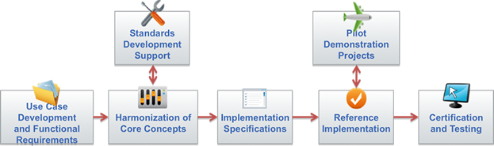

S&I Framework Explored
The Standards and Interoperability (S&I) Framework includes the community, processes, and specifications needed to support national health outcomes and healthcare priorities, including Meaningful Use and the ongoing efforts to create better care, better population health and cost reduction through delivery improvements:
- Community – network of volunteers working together to help move the healthcare industry forward
- Process – development cycle and other necessary operational steps that enable the successful execution of S&I Initiatives
- Specifications, Tools, and Services – tools and services that facilitate productivity, enable re-use of concepts and components, and improve the exchange of information
The S&I Framework follows a clear development process to enable the community to create harmonized standards, specifications and implementation guidance, as illustrated below.

The primary objective is to create explicit, unambiguous documentation of the use cases, functional requirements and interoperability specifications, guided by real-world implementability.
The S&I Framework community includes a broad variety of individuals and organizations who engage through an open, transparent process:
- Consumers / Patients
- Providers, including physicians, nurses, clinics, hospitals, etc.
- Clinical laboratories
- Government organizations and agencies
- Standards development organizations
- Industry Associations
- Health IT and Health Information Exchange vendors
- Payers
- Other stakeholders
The S&I Framework focuses on guiding the health information technology community to achieve lasting results in healthcare delivery improvements, through open communication and collaboration that is focused on:
- Uniting stakeholders on common healthcare challenges
- Developing content and technical specifications
- Developing reusable tools and services
Be an active participant in solving the healthcare interoperability challenges we face today. Get involved with the S&I Framework by following the steps on our Getting Involved page. Visit S&I Initiatives page to read more about current initiatives:
- Transitions of Care
- Laboratory Results Interface
- Provider Directories
- Query Health
- Data Segmentation
- esMD
- Certificate Interoperability
- Longitudinal Coordination of Care
- Public Health Reporting